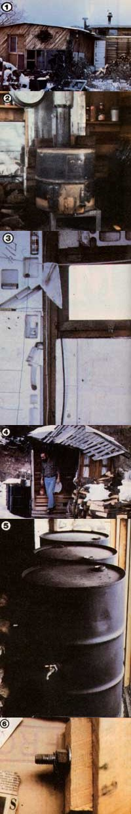

When Bill Case told me that his combination house and pottery studio had cost him only $800 to construct, I was impressed. Then, when he pointed out that the entire structure was portable to boot, I was simply amazed!
"Well, I was broke at the time I built it," Bill explained. "I came to New Mexico in 1974 with nothing but my truck and the clothes I was wearing. The only asset I had was a friend's promise to let me use a piece of land he owned."
For an innovator like Bill, that offer seems to have been enough. He went to his pal's place at Canada de Los Alamos . . . leveled some of the land with a hand shovel . . . and-relying on his own ingenuity and an assortment of recycled materials-managed to pull a shelter up over himself.
"In order to earn a little pocket money, I arranged to haul trash from two motorcycle shops in Santa Fe," Case explained. "But instead of dumping the discards at the local landfill, I kept the material to use when building my house."
CRATE CREATIVITY
Bill, you see, had noted that many of the motorcycle crates were made up of a wealth of building materials. First, every one contained styrofoam padding in slabs from 2" to 8" thick. The enclosed bikes were also wrapped in a heavy plastic bag, and further protected by a stout mahogany frame. (Case figured that even the thick cardboard containers that surrounded all the other material would have some value.)
So, when he'd amassed enough crates, Bill combined them with a scrounged supply of scrap 2 X 4's to fabricate his home's well-insulated walls (see the accompanying diagram). The innermost styrofoam surface, of course, provides interior insulation. The next layer is a frame of cardboard-covered 2 X 4's (the paper product traps air pockets between the studs). Finally, plastic bags that once wrapped two-wheelers form a vapor barrier over the cardboard, and the shipping crate mahogany provides the exterior sheath.
When it came time to assemble a home from the made-up walls, Bill decided to build a portable dwelling. After all, he didn't own the land (and therefore didn't want to invest his effort in a house that he'd have to leave someday). Furthermore, since he'd be working alone, Case wanted to erect the house in sections that could be managed by one person.
To do so, Bill constructed his walls in 8' X 8' prefabricated panels, which are simply joined to each other with removable bolts. Braces were needed to hold the first pair of sections up, but the rest were able to stand unsupported once they were bolted together.
The home's ceiling was made from the same materials-and in the same man ner-as were the walls. "Putting on the roof was the hardest part of the job," Case recalls. "I had to raise a 20-foot beam and set it in place . . . climb up to get it squared away . . . climb back down to check it out . . . and climb up again if any adjustments were needed. I built the whole roof like that."
INEXPENSIVE INNOVATIONS
Bill made his own creosote (a mixture of tar and gasoline) to protect the structure's sole plate and any other areas that might otherwise have been prone to rotting as a result of contact with the earth. The preservative was applied over a batting of scrounged plastic bags.
Although Case had studied architecture, he says he used more common sense than planning when he designed his home: "All I did was make a few notes on the back of some envelopes." The builder did, however, devote a lot of thought to the placement of his windows. "I wanted them to look out over the most pleasing locations, and to let their sizes and shapes be determined by those of the pieces of glass I could obtain at little or no cost."
The glazing was scrounged from construction sites and picture frame shops, and the windows were positioned to bring in as much light as possible while opening upon views of the timbered hills around his home (and avoiding vistas cluttered with a neighbor's abandoned cars).
Bill's friends worried that the house-which has no foundation-would collapse in the first high wind . . . but their fears were unfounded. The building has withstood four angry New Mexico winters and seems likely to stand until Case decides to take it down.
Again, his mode of anchoring the structure was determined by economics. He just piled local rock against the interior walls and earth-bermed the outside. (Bags of pottery clay also help to hold down the studio's inside walls.)
A PROFITABLE STOVE
With the house erected and ready for occupancy, Bill attacked the problem of warming his dwelling. He built a fireplace, but it failed to "keep the icicles off the furniture". So the resourceful recycler set out in search of an efficient woodstove.
Finding commercially available heaters to be quite expensive, Case decided to go into debt for a $300 welding outfit instead. He then got hold of plans for a stove built from a 55-gallon drum and put together a couple of the woodburners. "They're pretty ugly," Bill admits, "but I learned enough by making mistakes on those two to construct a much better unit." The self-taught lessons proved to be worthwhile, too . . . because Bill went on to build 40 more such stoves that he sold to support himself and pay for the welding equipment.
All in all, Case finds that his heated house is quite adequate. He has a 12' X 16' living area and a 16' X 24' pottery studio . . . and the entire initial investment in his home and shop totals just $800. (Later, however, he spent an additional $200 for a yard light and a double layer of carpeting . . . which was used to cover the recycled plastic bags that, in turn, cover the dirt floor of his living quarters.)
What's more, he can take the whole house with him if he ever moves! "All I have to do is cut the sheathing over the joints with a Skilsaw . . . unbolt each section . . . pack the whole thing in my truck . . . and go! " Case laughs.
However, he isn't likely to leave soon, because Bill's now head of Arts and Crafts Marketing for the New Mexico Department of Commerce and Industry . . . and, despite the fact that he has a steady income, he still lives in his recycled home in Canada de los Alamos.
"It's not an attractive house," Bill summarized. "Everything about it was dictated by economic necessity. Nevertheless, the structure is quite livable . . . and such a house would be an inexpensive and workable way for a back-to-the lander to get through the first winter while building a permanent dwelling on his or her property."
ANOTHER SUGGESTION
While the $800 abode lacks thermal mass and is therefore difficult to heat with solar energy, the packing crate walls could be combined with either of two popular and inexpensive New Mexico building methods to remedy that shortcoming. The "Case Wall" could, for example, enclose an adobe structure (the material is wonderful for storing heat, but doesn't, by itself, provide good insulation) . . . or a person could erect such a wall around one of the stone and adobe-mortared houses popular in eastern New Mexico, which-again-provide thermal mass but have poor insulating qualities.
Even in its original form, however, Bill's portable dwelling stands as proof that there's no reason for anyone to freeze in a tent (or pay "double rent" by maintaining a dwelling in town) while building a dream house on his or her homestead acres . . . especially not while motorcycle shops are throwing away an awful lot of valuable building material!
EDITOR'S NOTE: Although many motorcycle manufacturers were using the crates described above when Bill Case built his low-cost shelter, you may have to do a little looking to locate such high-quality containers nowadays. Most firms now ship their products in less expensive plastic and/or metal-framed boxes, and those that still use the fine wooden crates-or their dealers-may well be asking a (usually reasonable) price for then.
|
 [1] Case pottery studio (on the left) and the bargain dwelling's smaller living quarters (on the right). [2] Rock ballast (next to Bill's homemade stove) helps to ""anchor"" the structure. [3] Cuts in the styrofoam wall serve as shelves for knickknacks. [4] An imaginative, free-form outhouse. [5] Water-filled barrels set behind a large studiio window provide thermal mass. [6] Removable bolts, such as this one, join the 8' x 8' prefabricated walls. Because they can be easily removed, the fasteners make the house portable. |
|
|